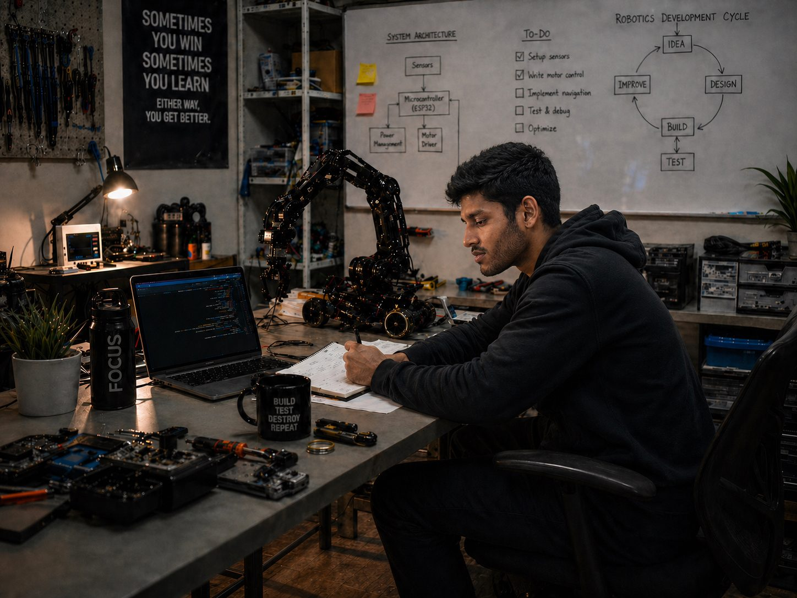

Project 02 / Robotics and autonomy
Custom F450 quadrotor — outdoor flight
Hand-built F450 quadrotor on a Pixhawk / PX4 stack with full pre-flight calibration and PID tuning, flown in outdoor field tests. The build and flight tests informed my later work on aerial robotics and visual tracking.

Overview
This project applies the methods below to a robotics or computer-vision task. The description and evidence are limited to the work and validation currently documented.
Methods and tools
Evidence and scope
Hand-built F450 quadrotor on a Pixhawk / PX4 stack with full pre-flight calibration and PID tuning, flown in outdoor field tests. The build and flight tests informed my later work on aerial robotics and visual tracking. Media shows the project material currently available. Simulator checks and offline tests do not establish physical deployment or broader performance beyond the recorded scope.